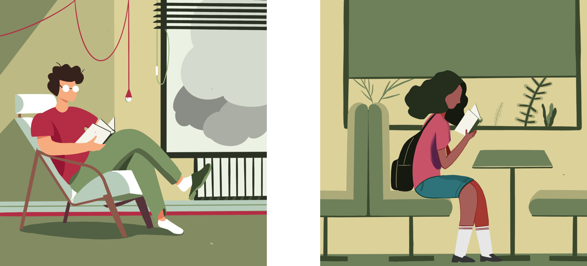
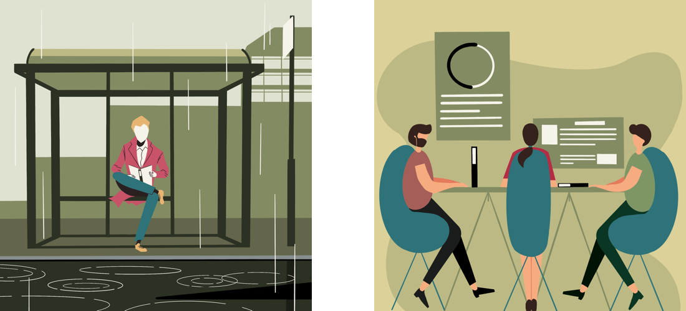

Take the book market of United States as example, e-book entered in 2010 and the whole sales volume increased each year. But the flattening of e-book sales happened in 2013 and it even started to decrease in 2015.
以美国图书市场为例，电子书进入2010年，整体销量逐年增长。 但电子书销量的平缓发生在 2013 年，甚至在 2015 年开始下降。
We can figure out that the book market of United Kingdom has the similar trend. The whole proportion stopped to expand in 2015 and deflated in 2016, and this is a change across all genres and categories.
我们可以看出英国的图书市场也有类似的趋势。 整体市场比例在2015年停止扩张，2016年开始萎缩。这种变化在所有题材和类别的书籍中都能看到。
The decline of e-book reader started even earlier, in 2012, and the extent is also bigger, reducing about 67.9%
电子书阅读器的销量下滑开始得更早，在2012年就有了趋势；幅度也更大，降幅约67.9%
Scene1
Scene2
Reading at home 在家中阅读
Reading in journey 在旅途中阅读
Scene3
Scene4
Reading in fragment time 在碎片时间阅读
Projecting content on the wall 内容投影到墙上
Through the investigation online and conversation with people around me, I find that they are all a little dissatisfied with reading experience of existing e-readers.
通过网上的调查和周围人的交谈，我发现他们对现有电子阅读器的阅读体验都有些不满意。
My another gain is that sharing is important even reading seems to be an individual activity, since people always need companions. At the same time, in order not to interrupt the reading process, I put the sharing stage after reading, that is, users can share reading notes.
我的另一个收获是分享很重要，即使阅读似乎是一项个人活动，因为人们总是需要同伴。 同时为了不打断阅读过程，我把阅读后的分享阶段，也就是用户可以分享阅读笔记。
These small dissatisfaction can be ignore in common time. But once when user need to do intensive reading for long time, their negative effects will be magnified to an unbearable level. So I collect all those uncomforts and try to improve them in my reader.
这些小小的不满在平时可以忽略。 但是一旦用户需要长时间进行精读，其负面影响就会被放大到无法承受的程度。 所以我收集了所有这些不舒服，并尝试在我的读者中改进它们。